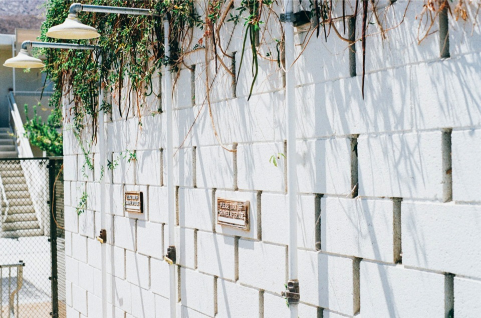

This a title right here
The heart began to beat faster and the heat of the body to increase.
- Then came the scarlet rash, spreading like wildfire over the face and body.
- Most persons never noticed the increase in heat and heart-beat, and the first they knew was when the scarlet rash came out.
- Usually, they had convulsions at the time of the appearance of the rash.
But these convulsions did not last long and were not very severe. If one lived through them, he became perfectly quiet, and only did he feel a numbness swiftly creeping up his body from the feet. The heels became numb first, then the legs, and hips, and when the numbness reached as high as his heart he died. They did not rave or sleep. Their minds always remained cool and calm up to the moment their heart numbed and stopped. And another strange thing was the rapidity of decomposition. No sooner was a person dead than the body seemed to fall to pieces, to fly apart, to melt away even as you looked at it. That was one of the reasons the plague spread so rapidly. All the billions of germs in a corpse were so immediately released.
